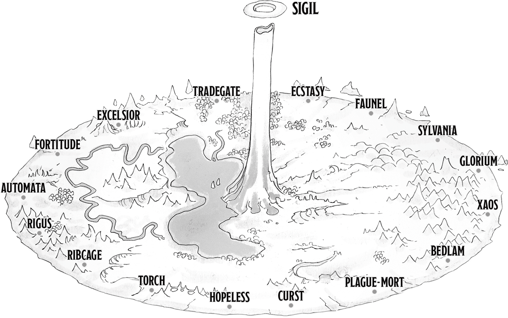

PLACES

-
Sigil, The City of Doors
At the center of the Outlands, like the axle of a great wheel, is the Spire. A needle shaped mountain that rises infinitely into the sky. Above this mountain's narrow peak floats the torus-shaped city of Sigil. Its myriad of structures, cascading over themselves, built on the ring's inner rim. Creatures standing on one of Sigil's streats can see the city curve up over their heads. Called the City of Doors, this bustling planar metropolis holds countless portals to other planes and worlds.
Sigil is the backstage of the multiverse. Celestials and Fields share drinks in genie-owned tavers, agents of evil gods trot through the streets stide nightmores, and hags stale faerie steeds alongside pegasi and beasts of living stone. As a result of this mingling, fundamentally incompatible parts of the multiverse come into direct contact. They don't awalways clash, but when they do, authorities maintain order and stifle comsmic peril. Only when these eruptions threaten the city on a grand scale does the Lady of Pain intervene. -
The Hive
Neglected by those in control, the Hive Ward has fallen into disrepar. Its building are lopsided hodgepodges of compelled architecture and obtainable materials, The floors haphazardly stacked atop one another burying even older layers. The crooked high-rises darken cramped alleys, many of which are dead ends in more ways than one.
Crime is commonplace here .Grifters, cutpurses, and miscreants band together in the moldering streets, preying on the desperate and downtrodden. Pickpockets masquerade as toutes, eager to pilder coin from stumbling sots and newcomes. Professions not outwardly criminal in nature are often morally suspect. Such are the corpse collectors. Opportunistic scavengers who scrape out a living by gathering bodies throughout the wards and elivering them ot the Mortuary for meager payouts.
-
Wilderness of the Beastlands
A plane of nature unbound, of forests ranging from moss-hung mangroves to snow-laden pines, of thick jungles where the branches are woven so tight that no light penetrates, of vast plains where grains and wildflowers wave in the wind with vibrant life. The plane embodies the wild's havoc and beauty. Speaking to the animal within all living things and wandered by the very law of nature herself.